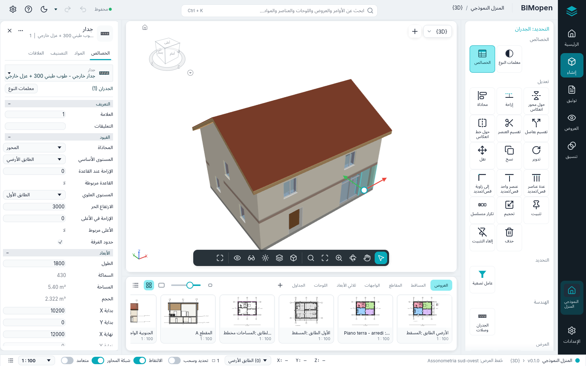
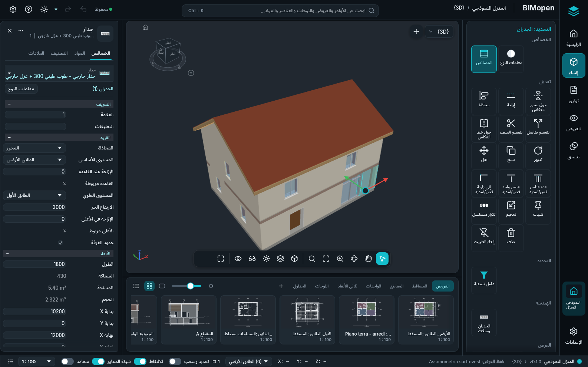

أنماط الواجهة
لدى BIMopen نمطان للواجهة. كلاهما ينفّذ الأوامر نفسها، بالأسماء نفسها واختصارات لوحة المفاتيح نفسها والنتائج نفسها؛ يتغيّر فقط المظهر ومكان الأدوات.
- نمط الكلاسيكي، الموصوف في الواجهة: الشريط، وشريط الخيارات، ولوحة الخصائص وفهرس المشروع. يبدأ BIMopen بهذا النمط.
- نمط BIMopen: شريط جانبي، وبحث عن الأوامر، وبطاقات أدوات، وأدوات عائمة فوق العرض، ولوحة للعنصر بعلامات تبويب، وشريط من الصور المصغرة للعروض.
اختيار النمط
- افتح قائمة التطبيق واختر خيارات (في نمط BIMopen، الترس في الطرف الأيسر من الشريط العلوي).
- في واجهة المستخدم، اضبط الواجهة على الكلاسيكي أو BIMopen. يبدأ BIMopen بنمط BIMopen، ويظهر النمط الكلاسيكي بعد تحديد تفعيل الواجهة الكلاسيكية.
تتغيّر النافذة فورًا. يبقى الاختيار محفوظًا، على الحاسوب وفي المتصفح، وتبدأ الجلسة التالية بالنمط نفسه. تنطبق السمة (فاتح أو داكن) على النمطين.
نمط BIMopen

| الجزء | المكان | ما يحتويه |
|---|---|---|
| الشريط الجانبي | الحافة اليمنى | علامة BIMopen (قائمة التطبيق)، والرئيسية (المشروع)، وإنشاء، وتوثيق، والعروض، وتنسيق، والمشروع المفتوح، والإعدادات. وهي تحل محل علامات تبويب الشريط. النقر على العنصر المحدد يطوي لوحة الأدوات |
| الشريط العلوي | في الأعلى | المشروع والعرض النشط، والبحث عن الأوامر، والتراجع والإعادة، وحالة الحفظ، والسمة الفاتحة أو الداكنة، وقائمة ? وخيارات |
| لوحة الأدوات | بجانب الشريط الجانبي | علامات تبويب الشريط كمجموعات من المربعات، كل أمر مرة واحدة: في إنشاء الرئيسية وإدراج (مع علامة التبويب العمارة)، وفي توثيق اللوحات والتعليقات التوضيحية، وفي العروض علامة التبويب العروض وفهرس المشروع، وفي تنسيق استعلام، وفي الإعدادات المشروع. أثناء عمل أداة أو عند تحديد شيء، تكون علامة التبويب السياقية («التحديد: الجدران»: نقل، نسخ، تدوير، انعكاس، قص، محاذاة، تحرير الحدود، إنهاء وضع التحرير…) في الأعلى؛ وEsc أو النقر في مكان فارغ يزيلها |
| شريط الخيارات | فوق العرض، أثناء عمل أداة | خيارات الأداة (الارتفاع، المحاذاة، متابعة…)، أي شريط الخيارات في نمط الكلاسيكي |
| العرض | في الوسط | محدد العرض و+ لعرض جديد. شريط عرض واحد في الأسفل وسطًا: التحديد، وأوضاع التحريك والمدار (ثلاثي الأبعاد) والتكبير (عند تفعيل أحدها يسحب الزر الأيسر العرض؛ وEsc ينهيه)، والتكبير للملاءمة، وخيارات التكبير | النمط الرسومي، والتفاصيل، والشمس والظلال (ثلاثي الأبعاد)، والاقتصاص (اقتصاص العرض، إظهار منطقة الاقتصاص)، وعزل مؤقت (قائمته كما في شريط التحكم في العرض؛ يُؤطَّر العرض ما دام مفعّلًا) وإظهار المخفي | ملء الشاشة. في العروض ثلاثية الأبعاد مكعب التوجيه (النقر على وجه أو حافة أو زاوية ينظر من هناك، والسحب يدوّر، والمنزل يعيد العرض الأولي)؛ وعلى التحديد أسهم النقل (اسحب سهمًا للنقل على امتداده، أو المركز للنقل بحرية في المسقط: تظهر المسافة أثناء السحب، وعند الإفلات يتم النقل كما في نقل) |
| لوحة العنصر | على اليسار | العنصر المحدد: الخصائص (المعاملات نفسها التي في لوحة الخصائص)، والمواد (طبقات نوعه بألوانها وسماكاتها، ومعاينة بالطبقات)، والتصنيف (الفئة، النوع، فئة IFC) والعلاقات (المستوى، المضيف، الأبواب والنوافذ المستضافة، العروض والجداول). من دون تحديد، خصائص العرض النشط |
| شريط العروض | تحت العرض | العروض حسب النوع (العروض، المساقط، المقاطع، الواجهات، ثلاثي الأبعاد، اللوحات، الجداول) كصور مصغرة أو كقائمة؛ النقر يفتح العرض، و+ ينشئ عرضًا جديدًا |
| شريط الحالة | في الأسفل | المشروع والإصدار، والعرض النشط، وتلميح الأداة النشطة، وإحداثيات المؤشر، والمستوى النشط (تفتح قائمته مسقط مستوى آخر)، وعدد العناصر المحددة (يفتح عامل تصفية)، ومفاتيح تحديد وسحب والالتقاط وشبكة المحاور ومتعامد، ومقياس العرض، وسجل الأوامر |
تشير علامتا التبويب الإنشاء والأنظمة الميكانيكية والكهربائية في إنشاء إلى أن هذه التخصصات ليست في BIMopen بعد.
البحث عن الأوامر
اضغط Ctrl+K، أو انقر في مربع البحث في الشريط العلوي، واكتب بضعة أحرف: تعرض القائمة الأوامر والعروض واللوحات والجداول والعناصر والمواد المطابقة. انقر على نتيجة، أو اخترها بمفاتيح الأسهم واضغط Enter: يبدأ أمر، أو يُفتح عرض، أو يُحدَّد عنصر ويُعرض، أو تُفتح مادة في المواد. يجد البحث كل أمر من علامات تبويب الشريط، ومنها أوامر علامة التبويب السياقية (مع عرض محدد على لوحة، تجد «تفعيل» تفعيل العرض)، وينفّذه كما يفعل زره.
مربع البحث هو أيضًا سطر أوامر النمط. ما يُكتب في عرض يصل إليه، كما في سطر الأوامر في نمط
الكلاسيكي، ويُنفّذ Enter اختصار لوحة مفاتيح (WA، DR، ZF…) أو أمرًا مع وسائطه
(wall 0,0 5,0) كما كُتب. قائمة الأوامر في سطر الأوامر و MCP.
قائمة الزر الأيمن
في المساقط والمقاطع والعروض ثلاثية الأبعاد يفتح الزر الأيمن قائمة داكنة: مع تحديد، أولًا أوامر التعديل (نقل، نسخ، تدوير، محاذاة، إزاحة وغيرها)، ثم عناصر قائمة العرض نفسها في نمط الكلاسيكي.
كل ما في نمط الكلاسيكي
كل وظيفة في نمط الكلاسيكي موجودة في نمط BIMopen، مرة واحدة:
- كل زر في الشريط مربع في لوحة الأدوات، ضمن عنصر الشريط الجانبي الذي يضم علامة تبويبه، وتكون علامة التبويب السياقية تعديل أعلى اللوحة أثناء عمل أداة أو عند تحديد شيء؛
- علامة BIMopen أعلى الشريط الجانبي تفتح قائمة التطبيق؛ وفي الشريط العلوي التراجع والإعادة وقائمة ?؛
- يحتوي العروض على فهرس المشروع كاملًا مع قوائمه؛
- يمكن سحب صورة مصغرة من شريط العروض إلى اللوحة المفتوحة أو إلى الصورة المصغرة للوحة، وفي قائمة الزر الأيمن الخاصة بها إجراءات المتصفح وفتح في النافذة النشطة؛
- قائمة محدد العرض ترتب نوافذ العروض (تبديل العرض، تجانب، تتالي، تكبير، نسخ النافذة، إغلاق المخفية)؛ وCtrl+Tab ينتقل إلى النافذة السابقة؛
- يعرض الزر الأيمن على مربع إضافة إلى شريط أدوات الوصول السريع: تظهر الأداة في الشريط العلوي، وتعمل من أي قسم في الشريط الجانبي، ويعرض زرها الأيمن إزالة من شريط أدوات الوصول السريع؛
- تعمل تلميحات المفاتيح كما في الشريط: اضغط Alt وحرره (أو اضغط F10)، ثم يفتح حرف علامة التبويب قسم الشريط الجانبي الذي يضمها (يظهر حرفه على الشريط الجانبي)، وتبدأ أحرف الأداة الأداة.
فاتح وداكن

بالعربية تنعكس النافذة كلها، في النمطين: الشريط الجانبي ولوحة الأدوات على اليمين، ولوحة العنصر على اليسار.